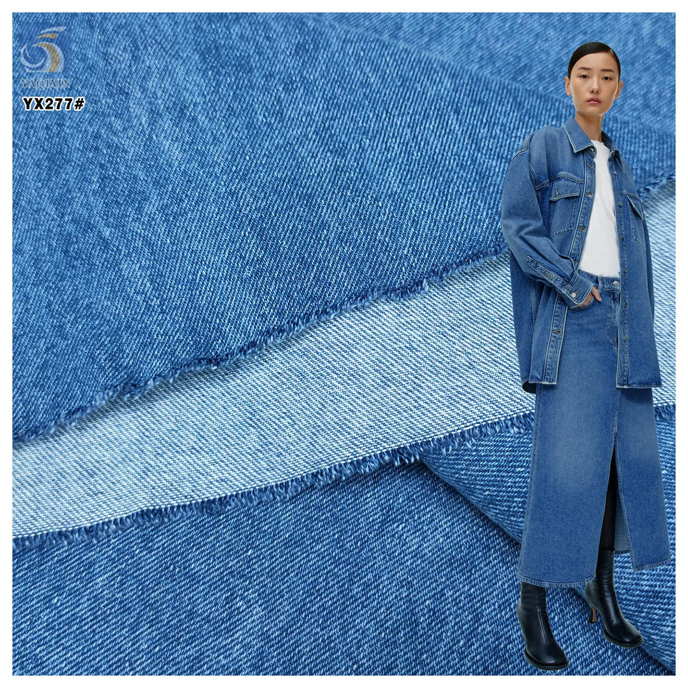

Fabric specification guide
Fabric GSM Guide for Apparel Buyers: Weight, Drape and Sourcing
A practical guide to what fabric GSM means, how weight interacts with construction and width, and how buyers can compare samples, estimate mass and prepare a clearer quote brief.
Read Article